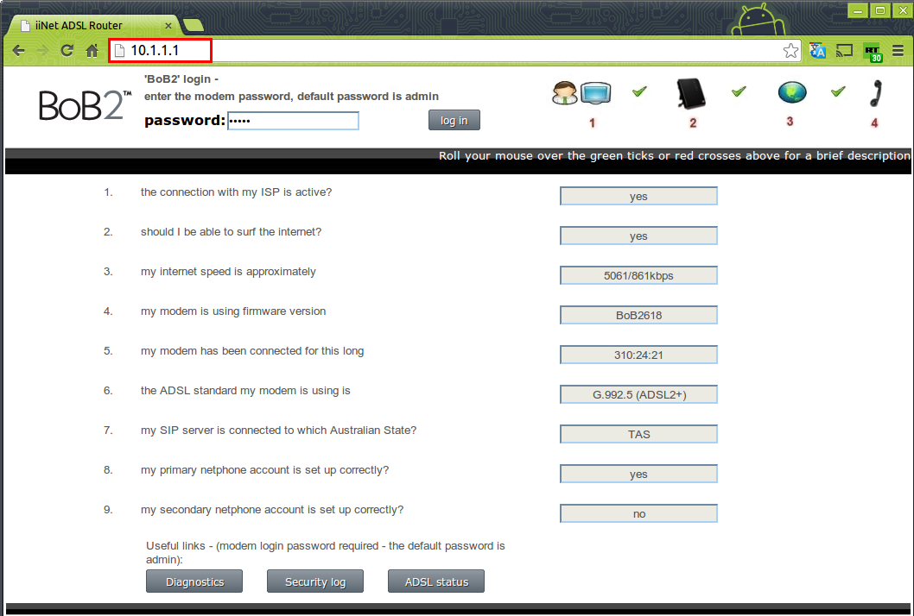
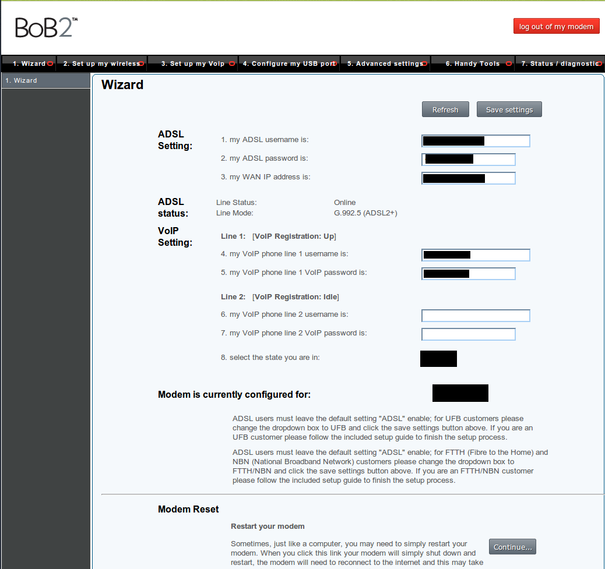
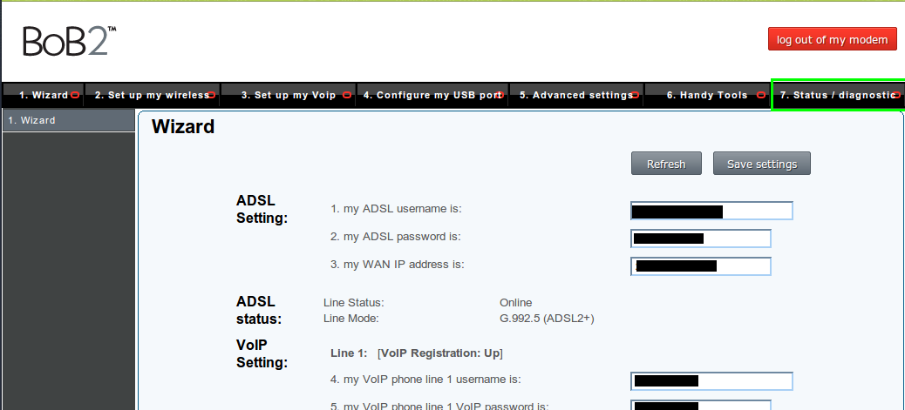
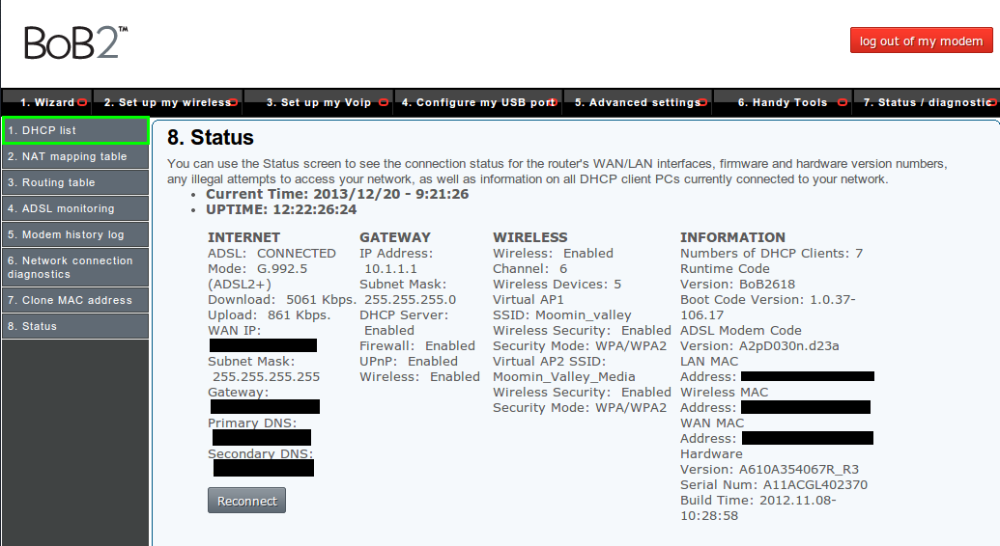
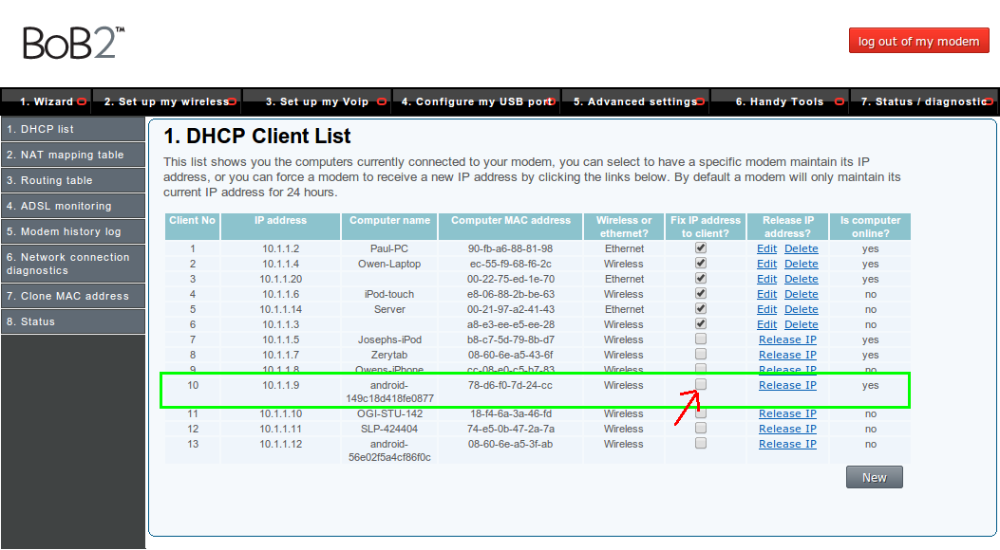
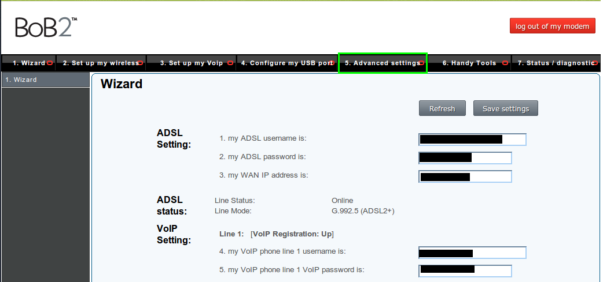
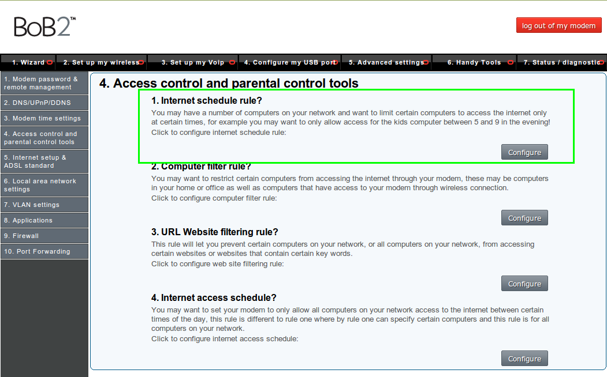
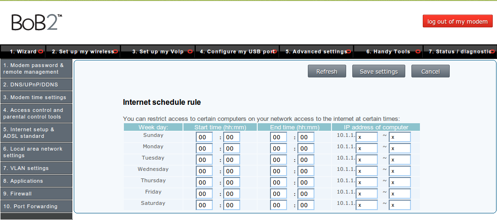

We are going to need to get the IP of the device that needs to be restricted.
In android this is fairly simple go to: "settings>wireless>long press the network its connected to> tap modify"
this should give you a page that has network name and other info, one of the titles should say IP address. Remeber this address (write it down or something)
Now open your browser and go to http://10.1.1.1 you should see this page:
Login and you should be presented with this page:
We are now going to make sure that the IP of the device won't change (internal IP's often change daily)
Click the Status/diagnostic tab:
You will be greeted by this page press the DHCP list tab on the left:
This page will take a few seconds to load and then you should be able to see all the devices on the network. Look for the device IP it should look like the highlighted one and select the tick box under "Fix IP address to client?"
The page will reload
Now we are going to setup the filtering
Press the advanced settings tab
This page will load. Click the "4. Access control and parental control tools" tab.
(While we are here it is worth noting the tool for changing the password for logining into the bob is located on this page)
Clicking on the tab will bring you to this page. Select the "1. Internet schedule rule?" configure button:
Now we just need to edit the times and device that we are filtering.
In place of the x's put the last number of the devices IP address and input the start and end of that you want it to be allowed through press 'save settings' and your done.
